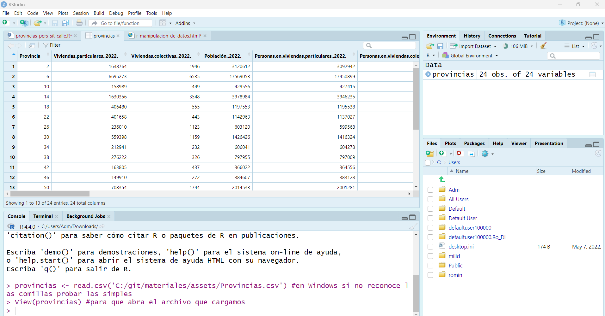
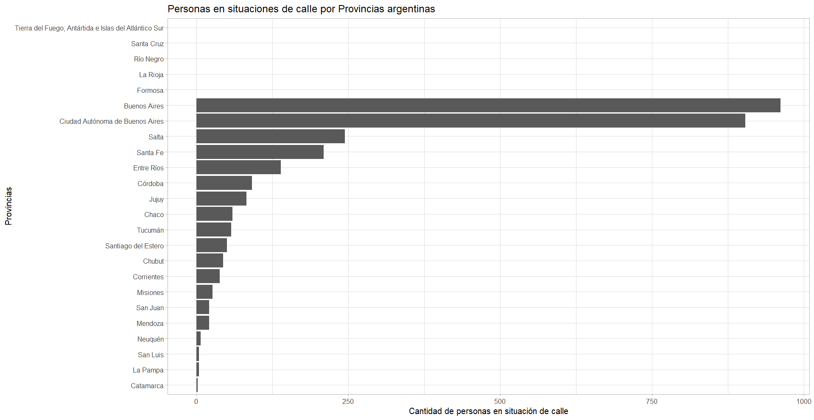
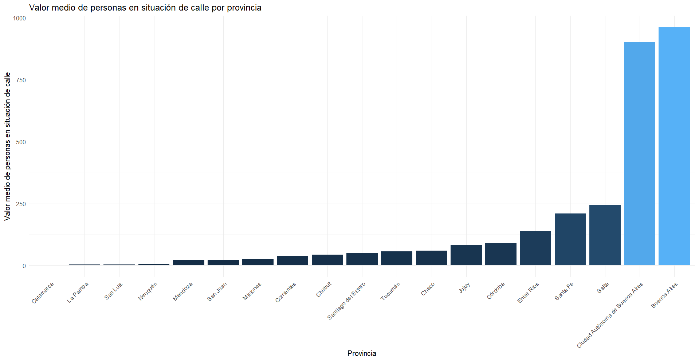

R trabaja con los siguientes tipos de objetos:
No te preocupes si no estas familiarizadx con estas nociones, pues iremos brindando la información necesaria a medida que trabajemos con estos tipos de datos en el curso.
Se nombran mediante la función c() (c de concatenate)
x <- c(1,2,3,4)Así, x es un vector que tiene cuatro componentes.
Para llamar/seleccionar elementos de un objeto se utilizan diferentes notaciones ([], $, [[]]). Por ejemplo, para seleccionar el segundo elemento del vector anterior, podemos hacer::
x[2]
## [1] 2Más detalladamente:
‘[]’ se utiliza para extraer uno o más elementos de la misma clase.
‘[[]]’ sirve para extraer elementos de distinta clase de un dataframe o de una lista.
‘$’ permite extraer elementos invocándolos por su nombre, por ejemplo, las columnas de un dataframe.
La función matrix() permite organizar los datos en una matriz con tantas filas y columnas como se necesite (indicadas por nrow y ncol respectivamente). Por ejemplo:
x <- matrix (data= c(1,2,3,4), nrow=2, ncol=2)o
x <- matrix (c(1,2,3,4), nrow=2, ncol=2)Crea una matriz de 2x2 (2 filas y 2 columnas). Aquíse ha rellenado por columnas; si lo que deseas que se complete por filas, deberás incluir: ‘byrow’ en la función.
Al trabajar con matrices, vectores o dataframes, se utilizan dos funciones muy útiles: ‘rbind’ y ‘cbind’. La primera sirve para añadir filas (row bind) y la segunda para añadir columnas (column bind).
x <- matrix(c(7,8,9,10),2,2) #creamos una matriz
y <- c(5,6) #creamos un vector
# Ahora añadiremos, por filas, los datos contenidos en el objeto 'y' al objeto 'x'
z <- rbind(x,y)
#Si queremos añadir los datos de 'y' a los de 'x' por columnas
w<- cbind(x,y)IMPORTANTE: Si las filas (o columnas) del objeto que añadimos no son múltiplo de las filas (o columnas) del objeto al que se añaden, R emitirá un mensaje de aviso (Warning message). Siempre es fundamental considerar que la dimensión de lo que agregamos quepa en la matriz.
Los dataframes son el plato fuerte de R. Se usan para almacenar datos en forma de tablas (filas / columnas), como archivos de Excel, CSV, etc. Pueden almacenar datos de diferente tipo, como ser datos numéricos, textuales, fechas, etc. Los dataframes pueden ser onsiderados como un tipo especial de lista donde cada uno de sus elementos debe tener la misma longitud.
Generalmente, los dataframes se crean al cargar/leer una base de datos. Podemos ver un ejemplo de dataframe predefinido en R Studio, escribiendo iris en la consola y luego presionando Enter. Este dataframe contiene información correspondiente a cinco tipos de flores, donde las columnas representan los atributos (largo y ancho de sépalo, largo y ancho de pétalo y especie). R Studio trae precargados diferentes data sets, podemos acceder a ellos escribiendo data().
Para crear un dataframe utilizaremos la función data.frame(). Una consideración importante: el número de vectores debe ser igual al número de columnas y los todos vectores deben tener el mismo largo (para respetar la cantidad de líneas).
# vectores sobre primeras seis películas de Harry Potter
pelicula <- c("HP1", "HP2", "HP3", "HP4", "HP5", "HP6")
puntuacion <- c(7.6, 7.4, 7.9, 7.7, 7.5, 7.6)
posterior_2004 <- c(FALSE, FALSE, TRUE, TRUE, TRUE, TRUE)
# crear dataframe
peliculas_df <- data.frame(pelicula,
puntuacion,
posterior_2004)
# Para ver las primeras líneas del dataframe
head(peliculas_df)
# Para acceder a la dimensión del dataframe
dim(peliculas_df)Para acceder a más ejemplos de operaciones básicas en R y R Studio, recomendamos consultar la documentación de R:
https://cran.r-project.org/manuals.html
https://cran.r-project.org/doc/contrib/R-intro-1.1.0-espanol.1.pdf
https://cran.r-project.org/doc/contrib/rdebuts_es.pdf
Ahora exportaremos el dataframe predefinido iris a CSV para poder observar como trabajan algunas funciones. Primero cargaremos la librería readr, que es más completa y eficiente para leer datos que las funciones básicas de R.
#Cargamos la librería readr
library("readr")
# Exportamos en formato CSV el df iris al archivo 'iris.csv'
write_csv(iris, path = "C:/hdcaicyt/R/iris.csv")
# ¡Importante! Escribir correctamente la ruta de acceso (si no fue configurada con anterioridad): 'path = "./iris.csv"'
# Para leer el contenido de un 'csv' usamos 'read_csv()'. Lo guardamos en la variable 'iris_importado_csv':
iris_importado_csv <- read_csv("./iris.csv")Cuestiones importantes a tener en cuenta de read_csv():
el parámetro col_names = FALSE permite modificar el coportamiento de read_csv() para que no asuma que la primera fila contiene los nombres de las variables.
skip es útil para informarle a read_csv() que comience a importar a partir de determinada fila: skip = n
NA (Not Available) son elementos no disponibles. Es muy importante tener en cuenta la presencia de NA en un dataframe porque puede modificar el comportamiento de las funciones que queramos aplicar.
Desde RStudio, podemos descargar datos de internet con las mismas funciones utilizadas en el entorno de trabajo, solo modificaremos la ruta de acceso proporcionando la de internet.
#cargaremos un *.csv a modo de ejemplo
url<- "https://raw.githubusercontent.com/rominicky/materiales/main/assets/Provincias.csv"
# Este paso se puede obviar, pero si queremos guardarlo en un destino:
destino <- "./provincias.csv"
download.file(url, destino)
provincias <- read_csv(destino)
#Si no deseáramos guardarlo, solo realizaremos este último comandoAhora vamos a profundizar un poco más. Igualmente, no se preocupen si algunos conceptos parecen ser demasiado complejos. En otra materia practicarán un poco más lento. Asimismo, con esta ejercitación sólo trataré de demostrar el poder de R, por ello vamos a utilizar algunas librerías más sofisticadas.
Ya vimos en la introducción que son los paquetes, estos conjuntos de programas que maximizan la funcionalidad de R. Ahora cargaremos uno de los paquetes más usados, tidyverse. Esta incluye una gran variadad de funciones, muy requeridas en la ciencia de datos, nos permitirá limpiar y transformar datos en R. El principio básico de un dataframe 'tidy' es que cada columna representa una variable y cada línea, una observación.
Si aún no lo hemos instalado, usamos la función install.packages() y le pasamos el nombre del paquete deseado, “tidyverse”, entre comillas.
install.packages("tidyverse")Luego, activarremos el conjunto de funciones que provee tidyverse, invocando library():
library(tidyverse)En este ejercicio usaremos dos de sus funciones: mutate() para modificar valores, y ggplot() para hacer gráficos.
Ahora vamos a instalar, si no lo hicimos previamente, a ggplot(), una excelente herramietna para visualizaciones.
Veremos las personas en situación de calle en Argentina según los datos del último censo, obtenidos desde Poblaciones.org. Desde allí obtuve el archivo .CSV que
provincias <- read.csv('C:/git/materiales/assets/Provincias.csv') #en Windows si no reconoce las comillas probar las simplesView(provincias) #para que abra el archivo que cargamos
library(tidyverse) #libreria para manipular datosprovincias <- provincias %>%
rename(situacion_calle = Personas.en.situación.de.calle..vía.pública.)%>% pipe es un operador que concatena operaciones, facilitando la lectura y lógica de las funciones. En este caso renombramos una columna del dataframe "provincias" mediante la función rename e indicando primero el nombre que utilizaremos y luego como se menciona la columna a cambiar.
Con la librería mencionada podríamos calcular la media de personas en situación de calle por provincia. En el análisis estadístico la media mide la tendencia central del valor típico o promedio en un conjunto de datos; se calcula sumando todos los valores y dividiendo ese valor por el número total de valores en el conjunto. Es decir, que resume la distribución de datos numéricos.
# Calculamos la media de personas en situación de calle por provincia
media_situacion_calle <- provincias %>%
group_by(Nombre.de.provincia) %>% #Agrupamos los datos por la columna Nombre.de.provincia.
summarise(media_situacion_calle = mean(situacion_calle, na.rm = TRUE)) #Calculamos la media de la columna situacion_calle por cada provincia agrupada, generamos una nueva columna 'media_situacion_calle'
Ahora, para realizar una visualización de dichos datos debemos evocar la función ggplot(), que genera un eje de coordenadas sobre el que pueden agregarse capas. El primer parámetro que asignamos a ggplot() es el dataset a graficar. Para nuestro ejemplo, haremos una visualización sobre las personas en situación de calle por provincias. Asimismo, ¿qué sucede si sólo indicamos ggplot(provincias)? Ejecutar sólo ese código nos devuelve un gráfico vacío, por ello es necesario agregar capas con los datos que queremos graficar. Estas se añaden con un signo +.
# Creamos el gráfico de personas en situación de calle por provincias
ggplot(provincias, aes(x = reorder(Nombre.de.provincia, situacion_calle), y = situacion_calle)) + #indicamos que datos asignamos a cada eje
geom_bar(stat = "identity", na.rm = TRUE) + #el tipo de gráfico que realizaremos, podría
coord_flip() + # Giramos el gráfico para mayor legibilidad
labs(title = "Personas en situaciones de calle por Provincias argentinas", #indicamos las etiquetas
x = "Provincias",
y = "Cantidad de personas en situación de calle") +
theme_light() #indicamos el tema, ggplot tiene 8 temas, el genérico es minimalEn nuestro caso utilizamos geom_bar(), que cuenta las ocurrencias para cada categoría de una variable. Existen muchas funciones de tipo “geom_XXX”, que agregan distintas clases de capas al gráfico: geom_point, geom_polygon, geom_text y muchos, muchos más que iremos viendo más adelante.1
Para esta librería cada función “geom_” añade parámetros que le indican qué graficar, cómo (color, tamaño, etc.) y dónde (posición x, posición y del eje). Estos parámetros se incluyen dentro de una función auxiliar, aes().

Realizamos un gráfico similar pero con la media
# Graficamos con barras apiladas la media
ggplot(subset(media_situacion_calle, media_situacion_calle > 0),
aes(x = reorder(Nombre.de.provincia, media_situacion_calle), y = media_situacion_calle, fill = media_situacion_calle)) +
geom_bar(stat = "identity") +
labs(title = "Valor medio de personas en situación de calle por provincia",
x = "Provincia",
y = "Valor medio de personas en situación de calle") +
theme_minimal() +
theme(axis.text.x = element_text(angle = 45, hjust = 1),
legend.position = "none") # Eliminamos la leyenda
Ahora realizaremos un gráfico comparando los datos de problación total del Censo 2022 y las personas en situación de calle por provincias.
# Gráfico comparativo
ggplot(provincias, aes(x = Nombre.de.provincia, y = Población..2022., fill = situacion_calle)) +
geom_bar(stat = "identity", position = "dodge", width = 0.7) +
scale_fill_viridis_c() + # Usaremos una paleta con colores contrastantes
labs(title = "Comparación de Población 2022 y personas en situación de calle por provincia",
x = "Provincia",
y = "Población 2022",
fill = "Personas en situación de calle") +
theme_minimal() +
theme(axis.text.x = element_text(angle = 45, hjust = 1)) # Rotamos a 45º las etiquetas del eje xEn este gráfico hemos modificado el tipo de barras, para ser apiladas, indicandole que el color lo tome según las personas en situación de calle, y para ello modificamos la escala de colores. En labs indicamos con fill = "Personas en situación de calle" el color asociado a la cantidad de personas que viven en la calle por provincias, que se compara con la barra de Población del Censo 2022.
En estas representaciones sólo se demostraron algunas funciones de la librería ggplot y tidyverse2, pueden seguir probando variedades modificando parámetros, así como otras variables que graficar, y trabajar con datos.
Para esta unidad, les propongo realizar un script, que llevará como nombre su identificación, y será subido al repositorio de su grupo (por ejemplo, si fuese mi script se llamaría "romina.R" y lo subiría a mi repo: libro-grupo_1, recuerden la clase anterior). Allí deberán llamar al CSV que utilizamos en este contenido, y hacer algún análisis con Tidyverse, puede ser filtrar, agrupar, resumir, sumarizar datos, o calcular porcentajes, y realizar un gráfico de ello con ggplot.
Puedes encontrar más información sobre visualizaciones y ggplot en https://r-charts.com/es/ranking/grafico-barras-ggplot2/.↩︎
Puedes encontrar más información sobre tidyverse en https://rpubs.com/paraneda/tidyverse y https://www.tidyverse.org/.↩︎